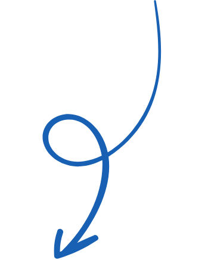
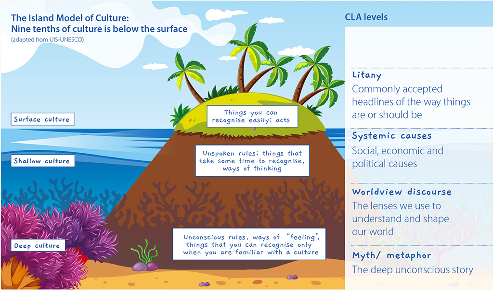

THE PACIFIC
PATHFINDER
PATHFINDER
a toolkit to imagine
and create futures


+
+


The Island Model of Culture:
Nine tenths of culture is below the sur
face
CLA levels
(adapted from UIS-UNESCO)
Surface culture

Things you can
recognise easily; acts
Unspoken rules; things that
take some time to recognise,
ways of thinking
Unconscious rules, ways of “feeling
things that you can recognise only
when you are familiar with a culture
”,
Shallow culture
Deep culture
Litany
Systemic causes
Worldview discourse
CLA
Old/ Current
New/ Future
LITANY
Commonly accepted
headlines of the way things
are or should be
P
acific people need help
,
and they need someone to
save them. P
acific people
lack the capacity to lead their
own development.
P
acific people have the
k
nowledge, assests and
tools to lead their own
development. P
acific people
have the voice and agenc
y to
determine their destiny as a
collective.
SYSTEMIC
CAUSE
political causes
Colonisation. P
olitics of
development aid in the
P
acific.
The place of the
P
acific in international
relations and the realities of
“Small”
Island Developing
States.
Decolonisation of our polic
y
and practice. Appreciation
for our cultural wealth and
cultural strengths as people.
WORLDVIEW DISCOURSE
The lenses we use to
understand and shape
our world
“Small”
Island Developing
States all of the P
acific Island
countries and territories,
are vulnerable, isolated and
operate from a deficit model.
Application of a Strengths
Based Approach to P
acific
development. Changing the
and political and elevating
the Blue P
acific Narrative.
MYTH/ METHAPHOR
The deep unconscious stor
y
Tagi a le pu mate:
Lake the
cr
conch, this refers to a person
whose life is in danger
.
Vivili fa’
amanu o matagi:
despite difficulties.
Fofo alamea:
W
e are the
solution to our challenges.
W
e are par
t of the problem,
and we are also par
t of the
solution.
Sa’
ilimalo:
Leading a legac
y
in search of
, or to achieve,
great things for the good of
the collective.